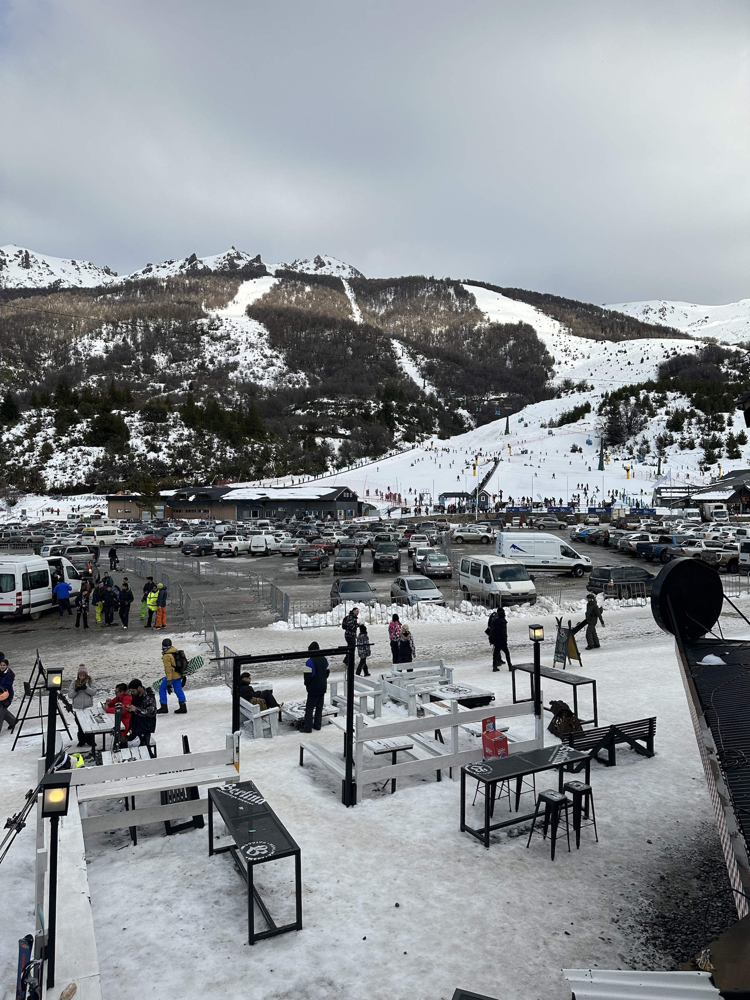
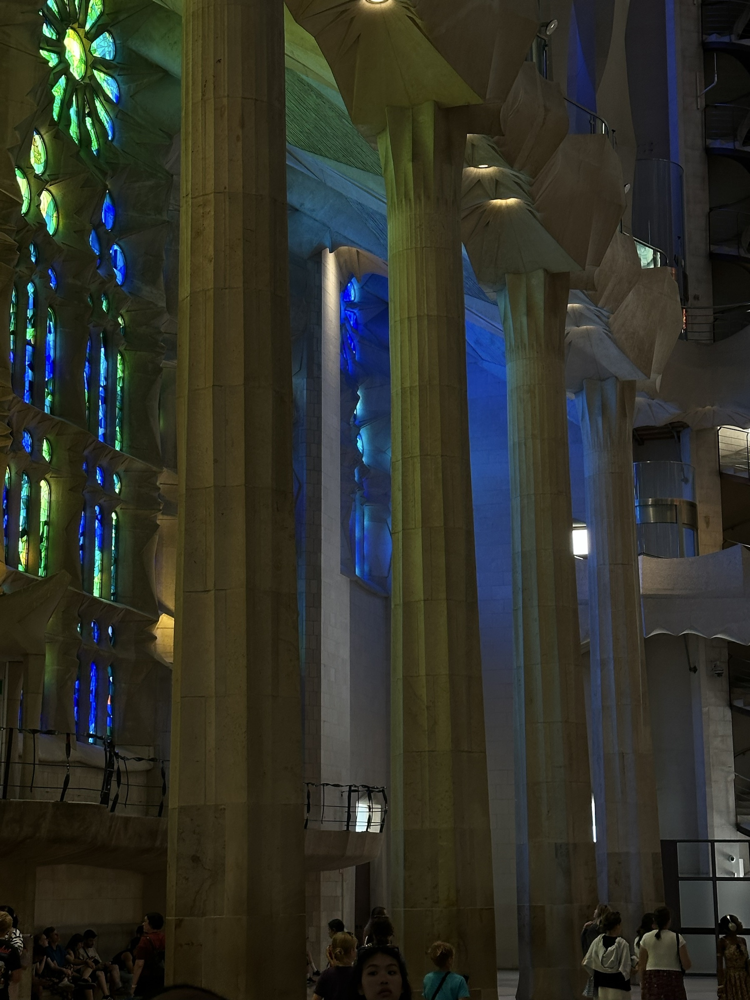
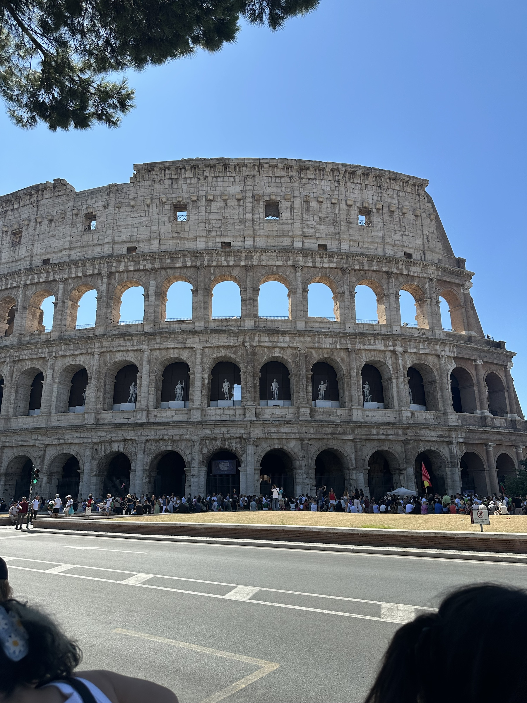
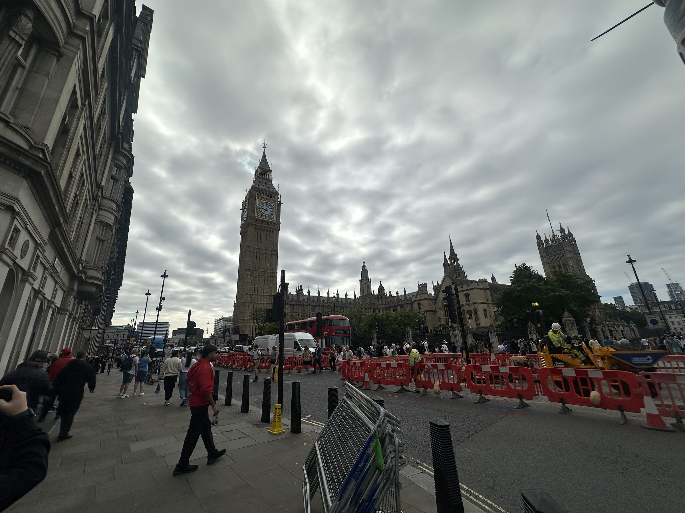
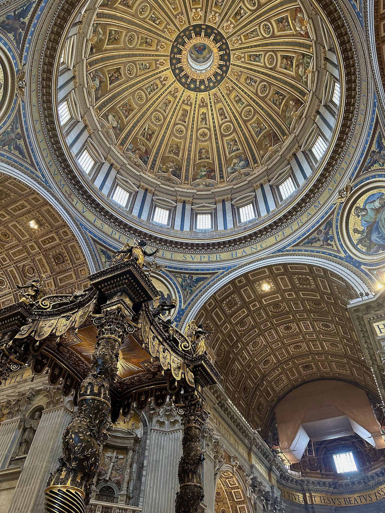

01 · Sudamérica
Galería fotográfica · Homero Gonzalez
Un recorrido personal por edificios, monumentos y lugares icónicos que conocí durante mis viajes.
Comenzar el recorrido
01
La propuesta
Esta galería reúne fotografías propias tomadas durante mis viajes. Cada destino guarda una forma distinta de construir, habitar y contar su historia.
Siete destinos · Veintidós fotografías

01 · Sudamérica

02 · Europa

03 · Norteamérica

04 · Europa

05 · Europa

06 · Europa

07 · Europa